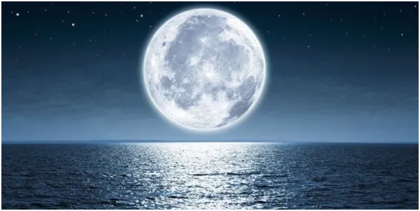
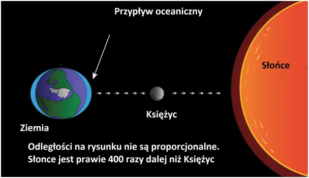
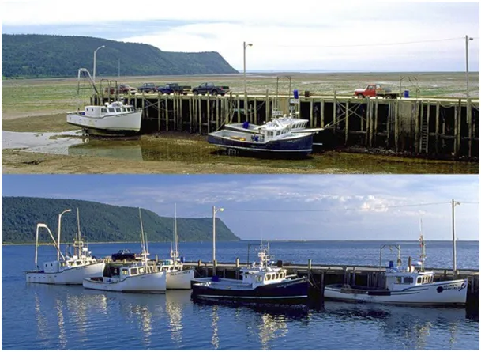

Księżyc kłamca, co noc podnosi kontynenty po cichu, gdy śpimy.
Tak niepochlebnie bywa nazywany, bo księżycowe światło potrafi nas oszukać. Dziś praktycznie nie mamy takich sytuacji: podobno twarz człowieka widziana po raz pierwszy w nocy, tylko w świetle księżyca, w dzień jest nie do rozpoznania.

Księżyc jest tuż, tuż, tylko 1 sekundę lotu promienia światła od Ziemi, jest na tyle duży, że wpływa nieustanie na to, co dzieje się u nas. Jego masa w połączeniu z grawitacyjnym oddziaływaniem Słońca rozciąga plastyczne oceny tworząc przypływy i odpływy. Nasz satelita potrzebuje prawie miesiąca, aby okrążyć Ziemię. Jednak, gdy jest w nowiu, czyli pomiędzy Ziemią a Słońcem, oddziaływania są największe. Kilkunastometrowa fala morskiej wody przesuwa się w wokół wirującego globu.

Jest jednak coś bardziej zdumiewającego, w każdej dobie, podczas swego obrotu skorupa ziemska przyciągana przez Słonce i Księżyc potrafi się podnieść o kilkadziesiąt centymetrów. To ponad 2 stopnie typowych schodów, robi wrażenie. W ciągu nocy z nowiem cała Afryka równikowa a Potem Ameryka Środkowa z Amazonią podnosi się powoli o 30 cm i opada nad ranem. Te powolne ruchy mają wpływ na geologię całej Ziemi.

Nie sposób wykluczyć, że przyczyniają się do trzęsień ziemi i erupcji wulkanów. Wędrówki całych kontynentów są również z tym związane. Nie tylko Słońce, ale i nasz bliski satelita ingeruje w nasze życie. Za kilka dni nów, w sobotę 21 stycznia, a po nim wszystko "od nowa", od nowa, ale inaczej. Pływy mają wpływ na prądy oceaniczne, procesy atmosferyczne, powstawanie chmur, cyrkulacje cyklonów. Ta lista nie ma końca, ten spektakl przyrody nie jest prosty i łatwy do zrozumienia, podziwiajmy go.
Paweł Klimczewski